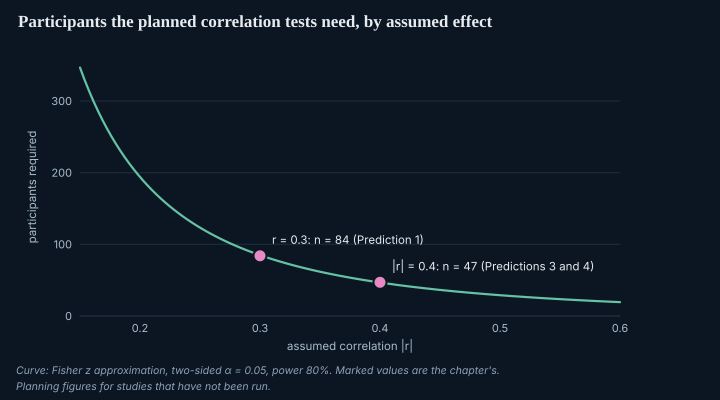

Chapter 17: Measuring the Clinical Metric
“The framework will be judged not by the elegance of its mathematics but by the accuracy of its predictions. Here are the predictions, the experiments to test them, and the criteria for falsification.”
Every theoretical framework must face the empirical challenge. The clinical decision complex, the $A^*$ pathfinding model, the moral injury accumulation theorem, the Bond Index, the consent gauge-invariance test — all of these are formal constructions. They generate predictions. The predictions must be tested. If they survive testing, the framework is supported. If they do not, the framework is wrong.
This chapter is the empirical interface between theory and data. It addresses three questions: How do we estimate the $9 \times 9$ clinical-moral covariance matrix $\Sigma$ from clinical data? What specific, falsifiable predictions does the framework generate? And what experimental designs can test those predictions with available instruments and feasible sample sizes?
17.1 The Central Empirical Challenge: Estimating $\Sigma$
What $\Sigma$ Encodes
The $9 \times 9$ clinical-moral covariance matrix $\Sigma$ is the framework’s central empirical object. It encodes the cross-dimensional dependencies that make clinical ethics hard:
- $\Sigma_{15}$ (outcomes $\times$ trust): A treatment with uncertain outcomes ($d_1$) is more costly when the trust relationship is fragile ($d_5$). The cross-term captures the interaction.
- $\Sigma_{49}$ (autonomy $\times$ epistemic): Respecting autonomy ($d_4$) requires that the patient has adequate understanding ($d_9$). When $d_9$ is low, invoking $d_4$ is more costly.
- $\Sigma_{37}$ (justice $\times$ dignity): A resource-allocation decision that is fair ($d_3$) but strips dignity ($d_7$) has high cross-dimensional cost.
These cross-terms are not philosophical abstractions. They are empirically estimable quantities — entries in a covariance matrix that can be computed from clinical decision data.
Why $\Sigma$ Has Not Been Estimated
The covariance matrix has 45 unique entries (9 diagonal + 36 off-diagonal, counting each symmetric pair once). Estimating 45 parameters from clinical data requires:
-
Dimensional measurement: A coding scheme that assigns each clinical decision a nine-dimensional attribute vector. This requires trained coders (clinicians who can evaluate decisions along all nine dimensions) and a validated coding protocol.
-
Sufficient sample size: Estimating a $9 \times 9$ covariance matrix with reasonable precision requires, as a rule of thumb, at least $n = 200$ observations per condition (a figure attributed to Maydeu-Olivares and Coffman, 2006). For ethics consultations, this means coding at least 500 consultations (allowing for incomplete data and stratification).
-
Representative sampling: The consultations must be representative of the clinical contexts where the framework applies — not just the dramatic cases (which are overrepresented in ethics consultations) but also the routine cases (which are underrepresented).1
These requirements are feasible but have not been met — the framework is new, and the measurement infrastructure does not yet exist.
Proposed Experimental Design for Estimating $\Sigma$
Study 1: Retrospective Ethics Consultation Coding
Design: Code $\geq 500$ ethics committee consultations from a large academic medical center, retrospectively, along all nine clinical-moral dimensions.
Coding protocol: 1. For each consultation, two trained clinician-coders independently assign an attribute vector $\mathbf{a}(v_0) \in \mathbb{R}^9$ for the initial clinical state and $\mathbf{a}(v_{\text{rec}}) \in \mathbb{R}^9$ for the recommended resolution. 2. Each dimension is scored on a calibrated scale (e.g., $[-1, +1]$ or $[0, 10]$) with anchor descriptions at key points. 3. Inter-rater reliability is assessed via intraclass correlation coefficient (ICC) for each dimension. 4. Disagreements are resolved by a third clinician-coder.
Analysis: 1. Compute the sample covariance matrix $\hat{\Sigma} = \frac{1}{n-1} \sum_{i=1}^{n} (\mathbf{a}_i - \bar{\mathbf{a}})(\mathbf{a}_i - \bar{\mathbf{a}})^T$. 2. Test for positive definiteness (required for the Mahalanobis metric to be well-defined). 3. Identify the largest off-diagonal elements — these are the cross-dimensional dependencies that drive the most clinical-ethical complexity. 4. Bootstrap confidence intervals for all 45 entries.
Feasibility: Ethics consultation records are maintained at most academic medical centers. Retrospective coding requires clinical expertise but not patient contact or prospective recruitment. Because the records already exist, the study may not need new consent from the patients; review of identifiable records still needs ethics review by an IRB or a waiver from one (Section 18.10 budgets IRB approval at each site). The primary cost is coder time — approximately 30 minutes per consultation for nine-dimensional coding, or 250 hours per coder for 500 consultations (500 coder-hours for the two independent coders).
Study 2: Prospective Discrete Choice Experiment
Design: A fractional-factorial discrete choice experiment using clinical vignettes. Each vignette presents a clinical scenario with two treatment options, and the clinician chooses between them. The vignettes systematically vary the nine-dimensional attribute vectors of the options.
Sample: $n \geq 200$ clinicians (physicians, nurses, and allied health professionals) from at least three clinical settings (ICU, general medicine, palliative care).
Vignette design: Fractional-factorial design with the nine clinical-moral dimensions as factors and two levels per factor (high/low). The full factorial design would require $2^9 = 512$ vignettes per participant — infeasible. A fractional design that estimates all main effects and two-factor interactions needs at least 46 vignettes (one mean, nine main effects and 36 two-factor interactions); the chapter’s estimate is approximately 50–80 vignettes per participant, administrable in a 45-minute session. A regular two-level fractional factorial of resolution V for nine factors has 128 runs, so a smaller design must be an irregular (for example, computer-generated) one.
Analysis: Conditional logit regression to estimate marginal rates of substitution (MRS) between dimensions:
$$\text{MRS}_{ij} = \frac{\partial U / \partial d_i}{\partial U / \partial d_j}$$
The MRS matrix is related to the inverse covariance matrix $\Sigma^{-1}$ — dimensions that clinicians are willing to trade off at low rates have high covariance (substitutes); dimensions that clinicians are unwilling to trade off have low covariance (complements or incommensurables).
Cross-validation: Use the estimated $\Sigma$ from Study 2 to predict the recommendations in Study 1’s held-out ethics consultations. If the $\Sigma$-based clinical geodesic matches the ethics committee’s recommendation in $> 70\%$ of cases, the covariance matrix has predictive validity.
17.2 Measuring the Bond Index from EHR Data
Which Dimensions Are Already in EHR Systems?
Electronic health records contain vast quantities of clinical data, but the data is organized for billing and clinical documentation, not for nine-dimensional manifold measurement. The mapping from EHR data to manifold dimensions:
| Dimension | EHR Data Source | Quality |
|---|---|---|
| $d_1$: Outcomes | Lab values, vital signs, ICD codes, mortality | Excellent |
| $d_2$: Rights | Consent forms, advance directives, DNR orders | Good (when documented) |
| $d_3$: Justice | Demographics, insurance type, zip code (proxy) | Indirect |
| $d_4$: Autonomy | Treatment refusal documentation, AMA discharges | Moderate |
| $d_5$: Trust | Not directly measured | Requires proxy |
| $d_6$: Social | Social work assessments, discharge planning | Variable |
| $d_7$: Dignity | Not directly measured | Requires proxy |
| $d_8$: Institutional | Protocol adherence, guideline compliance | Good |
| $d_9$: Epistemic | Not directly measured | Requires proxy |
Validated Proxies for $d_5$, $d_7$, $d_9$
The three dimensions not routinely captured in EHRs require validated proxy instruments:
$d_5$ (Trust) — Three proxy options:
-
Wake Forest Trust in Physician Scale (Hall et al., 2002). Ten items measuring fidelity, competence, honesty, confidentiality, and global trust. Cronbach’s alpha: 0.85–0.93. Validated across racial and ethnic groups. Administration time: 3 minutes.
-
HCAHPS Communication Composite (CMS). Items: “How often did doctors explain things in a way you could understand?” “How often did doctors listen carefully to you?” “How often did doctors treat you with courtesy and respect?” Available for all US hospitals as part of Medicare quality reporting. Advantage: already collected; disadvantage: coarse granularity.
-
Interpersonal Processes of Care Survey — Short Form (Stewart et al., 2011). Measures patient perceptions of discrimination, condescension, and communication quality. Specifically designed to capture trust-relevant experiences of minority patients. Administration time: 5 minutes.
$d_7$ (Dignity) — Two proxy options:
-
Patient Dignity Inventory (Chochinov et al., 2008). Twenty-five items measuring dignity-related distress: sense of being a burden, loss of control, uncertainty, feeling unheard. Originally validated in palliative care. Cronbach’s alpha: 0.93. Administration time: 10 minutes.
-
HCAHPS “Treated with Respect” Item (CMS). Single item: “During this hospital stay, how often were you treated with courtesy and respect?” Advantage: already collected at all US hospitals. Disadvantage: single item, limited sensitivity.
$d_9$ (Epistemic Status) — Three proxy options:
-
REALM (Rapid Estimate of Adult Literacy in Medicine; Davis et al., 1993). A 66-word recognition test that estimates health literacy in under 3 minutes. Correlates with reading comprehension and numeracy. Widely used in clinical research.
-
Newest Vital Sign (Weiss et al., 2005). A six-item assessment based on a nutrition label. Measures both literacy and numeracy. Administration time: 3 minutes.
-
Gauge-invariance test (from Chapter 8). Present clinical information in two semantically equivalent framings (e.g., “90% survival” vs. “10% mortality”) and measure decision consistency. Patients whose decisions change under reframing have inadequate $d_9$ calibration, regardless of literacy scores. This test is novel to the geometric framework and has not been independently validated — it is itself a falsifiable prediction (Prediction 3 below).
The Bond Index Computation Pipeline
Step 1: For a patient population $S$ at a healthcare institution, extract $d_1$, $d_2$, $d_3$, $d_4$, $d_6$, $d_8$ from EHR data.
Step 2: Administer proxy instruments for $d_5$, $d_7$, $d_9$ to a representative subsample. Use the subsample to train a predictive model that estimates $d_5$, $d_7$, $d_9$ from available EHR features (demographics, utilization patterns, communication notes).
Step 3: For each patient, construct the nine-dimensional attribute vector $\mathbf{a}(s)$.
Step 4: Compute the policy-mandated path $\gamma_P^*$ from documented clinical events (treatments, tests, referrals, outcomes).
Step 5: Compute the clinical geodesic $\gamma_{\mathcal{C}}^*$ using $A^*$ search on the estimated clinical decision complex with the estimated $\Sigma$.
Step 6: Compute $\text{BI}(P, S) = \frac{1}{|S|} \sum_{s \in S} [\text{CF}(\gamma_P^*(s)) - \text{CF}(\gamma_{\mathcal{C}}^*(s))]$.
Step 7: Stratify by demographics and compute disparity ratios.
17.3 The Falsifiable Prediction Suite
The framework generates six specific predictions, each with an experimental design, instruments, and falsification criteria. These predictions are not post hoc rationalizations — they are pre-specified claims that the framework makes and that the data can reject.
Prediction 1: Dimensional Moral Distress
Claim: Clinician moral distress (measured by MDS-R) correlates with the number of manifold dimensions activated in the distressing situation, not just with the severity on any single dimension.
Experimental design: Present $n \geq 200$ clinicians with 20 clinical vignettes, systematically varying the number of activated dimensions (2, 4, 6, 8) while holding $d_1$ severity constant. After each vignette, administer the MDS-R (or a vignette-adapted version) and a dimensional activation checklist.
Predicted result: MDS-R scores increase monotonically with dimension count, controlling for $d_1$ severity. The partial correlation between dimension count and MDS-R, controlling for $d_1$, is $r > 0.3$.
What would falsify: No correlation between dimension count and distress after controlling for $d_1$ severity. This would indicate that moral distress is a function of clinical severity alone, not of dimensional complexity — refuting the framework’s core claim.
Prediction 2: Moral Injury vs. Burnout Dissociation
Claim: Moral injury (MISS-HP) and burnout (MBI) are statistically dissociable constructs with different correlates.
Experimental design: Administer both MISS-HP and MBI to $n \geq 300$ clinicians across three settings (ICU, general medicine, palliative care). Collect covariates: workload (hours per week, patient volume), triage decision frequency, protocol disagreement score, and staffing ratio.
Predicted result: MISS-HP and MBI have $r < 0.7$ (moderate correlation, not identity). In a multiple regression, MISS-HP is predicted by triage decision frequency and protocol disagreement (moral injury predictors), while MBI is predicted by workload and staffing ratio (burnout predictors). The regression models have distinguishable predictor profiles.
What would falsify: $r > 0.9$ between MISS-HP and MBI with identical predictor profiles. This would indicate that moral injury and burnout are empirically indistinguishable — refuting the structural distinction between $g(n)$-depletion and $h(n)$-damage.
Prediction 3: Consent Gauge-Invariance Test
Claim: Patients with genuinely informed consent show framing invariance; patients who show framing effects have inadequate $d_9$ calibration.
Experimental design: Present $n \geq 200$ patients (pre-procedure, in a consent context) with clinical information in two framings: - Framing A: “This procedure has a 90% success rate.” - Framing B: “This procedure has a 10% failure rate.”
Measure: (a) treatment preference after each framing (same/different), (b) health literacy (REALM or NVS), (c) self-reported understanding of the procedure.
Predicted result: Framing-variant patients (those whose preferences change) have lower health literacy scores ($r = -0.4$) and lower self-reported understanding than framing-invariant patients. The gauge-invariance test identifies consent quality better than form completion alone.2
What would falsify: No correlation between framing invariance and comprehension. This would indicate that framing effects are independent of understanding — refuting the claim that consent is a gauge-invariance condition.
Prediction 4: Bond Index Predicts Disparities
Claim: The clinical Bond Index, computed from institutional policy analysis, predicts patient-reported experience disparities across demographic groups.
Experimental design: Compute $\text{BI}(P, S_k)$ for a hospital’s triage, consent, and discharge policies, stratified by race, age, and disability status. Correlate with HCAHPS patient experience scores stratified by the same demographics.
Predicted result: Groups with higher $\text{BI}$ report worse experience on HCAHPS trust, communication, and respect dimensions. Correlation $r > 0.4$ between $\text{BI}$ and HCAHPS composite, with the strongest correlation on the trust dimension ($d_5$).
What would falsify: No correlation between $\text{BI}$ and HCAHPS disparities. This would indicate that the Bond Index does not capture experientially meaningful injustice — refuting the claim that manifold cost is clinically relevant.
Prediction 5: Triage Resistance Correlates
Claim: Clinician resistance to utilitarian triage protocols correlates with pre-crisis $\beta_k$ profiles.
Experimental design: During a non-crisis period, survey $n \geq 200$ clinicians for $\beta_k$ profiles (boundary penalty estimates for abandonment, justice, dignity, etc.) using calibrated vignettes. Then, during a subsequent crisis (or using a triage simulation), measure clinician resistance to utilitarian triage (protest, non-compliance, distress scores).
Predicted result: Clinicians with high $\beta_{\text{abandon}}$ and $\beta_{\text{justice}}$ show more resistance ($r > 0.4$). The prediction is specific: resistance should correlate with the relevant boundary penalties (those crossed by the triage protocol) and not with irrelevant boundary penalties (those not crossed).
What would falsify: No correlation between pre-crisis $\beta_k$ profiles and triage resistance. This would indicate that resistance is situational rather than dispositional — refuting the claim that $\beta_k$ profiles predict moral injury vulnerability.
Prediction 6: Process-Path Superiority
Claim: In end-of-life decisions, family satisfaction is higher when the clinical geodesic includes process steps (family meetings, values conversations) than when the same endpoint is reached directly.
Experimental design: Retrospective comparison of end-of-life cases at $n \geq 3$ hospitals, stratified by whether the clinical path included formal family meetings and values conversations (process-path group) or reached the same clinical endpoint without them (direct-path group). Measure: family satisfaction (post-bereavement survey), clinician satisfaction, and grief outcomes at 6 months.
Predicted result: The process-path group reports higher satisfaction on trust, communication, and respect dimensions, even when the clinical outcome (patient death) is identical. The $d_1$ outcome is the same; the manifold cost is different.
What would falsify: No satisfaction difference between process-path and direct-path groups. This would indicate that the path does not matter — only the endpoint — refuting the framework’s claim that the clinical geodesic optimizes process, not just outcome.
17.4 Power Analysis and Feasibility
Sample Size Requirements
Each prediction requires a specific sample size for adequate statistical power. The following power analyses assume $\alpha = 0.05$, $\beta = 0.20$ (80% power), and the effect sizes specified in each prediction.
Prediction 1 (Dimensional Moral Distress): - Effect size: Partial $r = 0.3$ (medium) - Required $n$: 84 clinicians (for the partial correlation test) - Proposed $n$: 200 clinicians (to accommodate subgroup analyses by specialty) - Vignettes per participant: 20 - Total vignette evaluations: 4,000
Prediction 2 (MI-Burnout Dissociation): - Effect size: $r < 0.7$ between MISS-HP and MBI (upper bound for “not identical”) - Required $n$: 300 clinicians (to detect the difference in predictor profiles with adequate power in multiple regression) - Settings: 3 (ICU, general medicine, palliative care), 100 per setting
Prediction 3 (Consent Gauge-Invariance): - Effect size: $r = -0.4$ between framing variance and health literacy - Required $n$: 47 patients (for the correlation test) - Proposed $n$: 200 patients (for subgroup analysis by literacy level and procedure type) - Sarah’s hypothetical pilot (Section 17.6, illustrative; no such study has been run): $n = 84$, $r = -0.41$ — the effect size the design assumes
Prediction 4 (Bond Index Predicts Disparities): - Effect size: $r = 0.4$ between BI and HCAHPS composite - Required $n$: 47 (for the correlation) but the practical requirement is larger — computing BI requires a sample of patients large enough to stratify by demographics - Proposed $n$: 500+ patients with both BI computation and HCAHPS data
Prediction 5 (Triage Resistance Correlates): - Effect size: $r = 0.4$ between pre-crisis $\beta_k$ and resistance - Required $n$: 200 clinicians with pre-crisis survey and post-crisis resistance data - Challenge: Requires prospective measurement before a crisis, which is logistically difficult - Alternative: Use triage simulations as the “crisis” and measure resistance in a controlled setting
Prediction 6 (Process-Path Superiority): - Effect size: $d = 0.5$ (medium) on satisfaction between process-path and direct-path groups - Required $n$: 64 per group (128 total) for a two-sample $t$-test - Proposed $n$: 200 end-of-life cases (100 process-path, 100 direct-path) for adequate power with covariates

Figure 17.1. The sample sizes Section 17.4 prints for its correlation tests, on the curve they come from. The horizontal axis is the correlation a study assumes; the vertical axis is the number of participants needed to detect it with 80 percent power at a two-sided significance level of 0.05. The curve is the standard Fisher approximation; it gives 47 at 0.4, as the chapter prints, and 85 at 0.3 where the chapter prints 84. A smaller assumed effect needs many more participants. These are planning figures: no study has been run.
Total Research Program Scope
The complete six-prediction program requires approximately: - 200 clinicians for Prediction 1 (vignette study) - 300 clinicians for Prediction 2 (cross-sectional survey) - 200 patients for Prediction 3 (consent experiment) - 500+ patients for Prediction 4 (Bond Index computation) - 200 clinicians for Prediction 5 (pre-crisis survey + simulation) - 200 end-of-life cases for Prediction 6 (retrospective comparison)
With overlap between studies (clinicians in Predictions 1, 2, and 5 can be the same individuals; patients in Predictions 3, 4, and 6 can overlap), the total requirement is approximately 500 clinicians and 500 patients across three sites — feasible for a multi-site study with a three-year timeline and $1–2 million budget.
17.5 The Falsifiability Standard
What Would Falsify the Framework
The framework would be falsified by any of the following:
-
Moral distress is purely a function of $d_1$ severity. If dimension count has no independent effect on distress after controlling for clinical severity, the multi-dimensional structure is unnecessary.
-
Moral injury and burnout are empirically indistinguishable. If MISS-HP and MBI are perfectly correlated with identical predictor profiles, the $g(n)$/$h(n)$ distinction is not supported.
-
QALY allocation produces no demographic disparities beyond what $d_1$ differences explain. If the Bond Index reveals no disparities after controlling for clinical severity, the dimensional omission hypothesis is wrong.
-
A clinical dilemma is identified that cannot be decomposed into the nine-dimensional attribute space. If a clinically relevant dimension is found that is independent of all nine existing dimensions, the manifold is under-specified and requires extension.
-
The consent gauge-invariance test does not predict consent quality. If framing invariance is unrelated to comprehension, the consent-as-gauge-invariance formulation is wrong.
-
Clinicians’ pre-crisis $\beta_k$ profiles do not predict post-crisis moral injury. If vulnerability is entirely situational rather than dispositional, the accumulation model’s mechanism is wrong.
Each of these falsification criteria is specific, testable, and decisive. The framework stands or falls on the evidence.3
17.6 Sarah’s Experiment: An Illustrative Scenario
In this illustrative scenario (Sarah is a composite character, and no such study has been run), Sarah designs her first study: a prospective consent gauge-invariance experiment. She presents patients scheduled for elective surgery with consent information in two framings:
- Version A: “This surgery has a 95% success rate. 5 out of 100 patients experience a complication.”
- Version B: “This surgery has a 5% complication rate. 95 out of 100 patients have no complications.”
She measures: (a) treatment preference after each version (proceed/defer), (b) REALM health literacy score, (c) three-item understanding assessment.
Her hypothetical preliminary results ($n = 84$, illustrative pilot; the numbers are invented to show what the analysis would report):
- 23% of patients showed framing effects (different preference under Version A vs. Version B)
- Framing-variant patients had lower REALM scores (mean 48 vs. 61, $p < 0.001$)
- Framing-variant patients had lower self-reported understanding (mean 2.1 vs. 3.4 on 5-point scale, $p < 0.001$)
- Correlation between framing variance and health literacy: $r = -0.41$, $p < 0.01$
In the scenario, the hypothetical pilot comes out as the geometric prediction says a real one should: framing-variant patients have lower health literacy and lower self-reported understanding. The consent form — which all patients signed — does not distinguish between framing-variant and framing-invariant patients. The gauge-invariance test does.
Sarah submits a grant proposal for the full study ($n = 300$) with pre-registration of the six predictions. She does not know whether all six will be confirmed. She knows that the framework has made specific, falsifiable claims, and she knows how to test them. The manifold is a mathematical structure. Whether it corresponds to clinical reality is an empirical question. Sarah intends to answer it.
Chapter Summary
The framework’s central empirical challenge — estimating the $9 \times 9$ clinical-moral covariance matrix $\Sigma$ — is feasible using retrospective ethics consultation coding and prospective discrete choice experiments. Six of nine dimensions are already captured in electronic health records; the remaining three (trust, dignity, epistemic status) have validated proxy instruments. The Bond Index can be computed from EHR data supplemented by proxy measurements. The framework generates six falsifiable predictions — dimensional moral distress, MI-burnout dissociation, consent gauge invariance, Bond Index predicting disparities, triage resistance correlates, and process-path superiority — each with specific experimental designs, instruments, and falsification criteria. The predictions are pre-specified and decisive: the framework stands or falls on the evidence.
-
The $9 \times 9$ covariance matrix may vary across clinical cultures. Japanese medicine, with its emphasis on family-centered decision-making, likely has different $\Sigma_{46}$ (autonomy $\times$ social impact) than American medicine. The framework can accommodate this variation, but the variation itself must be mapped empirically — which means estimating $\Sigma$ in multiple cultural contexts. ↩
-
The consent gauge-invariance test is the most immediately actionable prediction: it can be implemented at the bedside today, using two versions of a consent form. If the patient’s decision changes when the framing changes, the consent is not genuinely informed — regardless of what the signed form says. ↩
-
The prediction suite was designed to be falsifiable in the strong sense: each prediction specifies what the framework claims, what data would confirm it, and what data would refute it. A framework that cannot be refuted by any conceivable evidence is not a scientific framework. ↩